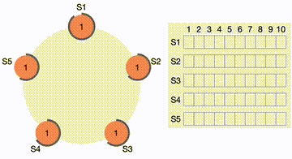

Information Security Crash Course 信息安全速成笔记
所有计算机的问题都是文本处理的问题.
1 Blockchain 区块链
- Motivation and related concept
- Ledger 交易账本: 记录对某种财产 (property) 的状态变化 (maintenance) 的历史 (比如银行卡转账记录).
- 传统的 Ledger 时中心化地由银行的 DBMS (Database Management System) 来维护的, 我们信任银行本质上是信任国家的信用, 可是 xxx? 为了摆脱对中心化机构的信任, 需要一个 DLT (Distributed Ledger Technology) 来分布式地维护 Ledger! 我们希望它的机制公开透明, 并在数学上能保证其安全性.
- DLT 可以利用多种数据结构来组织数据 (Blockchain 可以同时具有下面的数据结构):
- Linked list 链表
- DAG (Directed Acyclic Graph 有向无环图)
- Tree 树
- Ledger 交易账本: 记录对某种财产 (property) 的状态变化 (maintenance) 的历史 (比如银行卡转账记录).
- Blockchain features 特点
- Decentralization 去中心化
- Immutability 不可篡改性
- Transparency 透明性
- Pseudonymity 匿名性
- Non-Repudiation 不可否认性: 一旦交易记录成功不可撤回和修改.
- Blockchain classification 分类
- Permissionless 无需许可: 任何人都可以参与添加区块.
- Public 公开链: 任何有可以上网的电脑的人都可以查看区块链数据 (如 Bitcoin 区块链). 特点: 比如 Bitcoin 区块链的 TPS (Transactions Per Second) 每秒 \(<10\); Scalability 可扩展性差; Block size 区块大小有限制; 挖矿能耗高.
- Permissioned 需要许可: 只有被授权的用户才能参与添加区块.
- Private 私有链: 只有被授权的用户才能查看区块链数据.
- Consortium 联盟链: 由多个组织共同维护的区块链, 只有被授权的组织才能查看相应部分的区块链数据.
- Permissionless 无需许可: 任何人都可以参与添加区块.

1.1 Build the bitcoin blockchain from scratch
P2P network: 假设你有 \(10\) 台电脑, 手动输入每台电脑附近一两台电脑的 IP 和它们监听的端口 (bootstrapping). 写一个程序比如
node.py来让每台电脑都运行这个程序, 监听自己端口的同时向认识的电脑发送邻居 IP. 这样方便以后路由.Wallet:
- 首先每台电脑随机生成一个 \(256\) bit 的私钥 \(sk\).
- 用一个 one-way function (比如 hashing function, ECDSA (Elliptic Curve Digital Signature Algorithm)) 从私钥 \(sk\) 计算出公钥 \(pk\) (也是 \(256\) bit).
- \(pk\) 作为节点的身份 ID, \(sk\) 用来签名消息.
Transaction (Tx) 交易: 定义交易数据结构, 比如:
Transaction { from: PublicKey_A, to: PublicKey_B, amount: 10, signature: Sign(privateKey_A, above_fields) }- 每个节点可以用公钥验证交易的合法性.
Mempool 交易池: 每个节点如果有交易记录产生, 就生成一个 Transaction 转发给相邻节点, 它们会先验证合法性, 然后将其加入自己的交易池中 (每个节点维护一个交易池, 存放收到但还未打包进区块的交易).
Block 区块: TODO
1.2 Some Questions
Blockchain 很难用线性的讲法来解释清楚, 这里列出一些常见的问题.
- 记账系统跟发行一种币有什么关系? 发行的新的币又是如何跟现存的币交换的?
- 这涉及到货币的本质. 衡量价值依赖两个特性, 一是获取他需要付出一定的成本; 二是大家都承认可以一般化地等价其他东西.
- bitcoin 只记录比特币的交易.
- 为什么最初会有人自发来用这个系统记账?
- Incentives for minors: transaction fee (手续费, 转账的人要多付出一点点给打包区块的人 (比银行低多了)) + 凭空送 (中本聪设计 PoW 使得全世界一起算的话平均每 10 分钟能产生一个新区块, 第一个包奖励 \(50\) BTC (in 2009), \(4\) 年之内都是如此, 第二个 \(4\) 年挖出一个区块奖励减半 (\(25\) BTC) [1], etc.1)
- Follow-up: 如果他获得的奖励不是现实世界中的物品而也只是这个虚拟世界的货币, 一开始的驱动力是哪来的?
- 可以有很多因素: 意识形态动机 (比如对银行的不信任, 冻结与审查的反感), 有限下行风险 + 极大上行空间 (Option-like payoff).
1 这是一个收敛的几何级数, 所以比特币的数量是固定的 (\(21\) million). 2025 年挖出一个区块奖励是 \(3.125\) BTC. 凭空送的部分是有最小值的 (\(10^{-8}\) BTC, 即 \(1\) Satoshi), 约在 2140 年达到这个值, 以后凭空送部分就没有了, 以后矿工的收入就全靠 transaction fee 了 [1].
如果在网络的两个角落同时产生了两个区块, 如何处理?
- LCP (Longest Chain Principle) 最长链原则: 每个节点只在它认为的最长链上继续打包新的区块 (每个节点可能会有不同的最长链).
- 所以你挖出来的区块可能最终不会被承认.
如何防止恶意用户篡改数据?
- 防止不了. 但几乎不可能, 因为
如何防止随意给自己转账?
当某节点收到一笔交易时, 会做什么? 收到新区块呢?
- 收到交易: 进行余额检查 (通过追溯之前的交易记录) + 验证签名, 合法就放进交易池.
- 收到新区块:
如何防止双重支付 (Double spending, 即某个节点 \(A\) 给两批相邻节点试图用同一笔余额给不同的人转账, 这两批节点经过余额检查后都会认为 \(A\) 的交易是合法的)?
- 只承认打包好的区块里的交易记录. 哪一笔交易先被打包进区块, 哪一笔交易就有效.
1.3 Consenus Algorithm 共识算法
用来让分布式网络中的节点就某个数据达成一致的算法. (不是区块链特有的概念!)
Basic concepts
- 节点类型: Legitimate/honest nodes (诚实节点), Malicious nodes (恶意节点).
- 故障类型: Crash fault (由诚实节点导致的故障), Byzantine fault (拜占庭故障, 由恶意节点导致的故障).
PoW (Proof of Work 工作量证明): 通过尝试 nonce 的值来找到一个 hash 值满足某个条件 (比如前面有 \(n\) 个 \(0\)). Hash rate 越高, 挖矿越快. 安全性非常高, 但验证时间较长、挖矿能耗很高.
- Winning probability: 设有 \(N\) 个 miners, 第 \(i\) 个 miner 的 hash rate 是 \(\varphi_i\), 则它的 winning probability \[\mathbb{P}_i = \frac{\varphi_i}{\sum_{j=1}^N \varphi_j}.\]
- \(51\%\) attack: 如果某个恶意矿工控制了超过 \(50\%\) 的算力, 它就可以随意篡改区块链数据.
PoS (Proof of Stake 权益证明): 交 stake (押金), 用押金的多少做权重随机选择下一个打包区块的节点. 节点如果作恶, 会被没收押金. 验证时间较短, 能耗低, 但安全性不如 PoW (有钱就行).
PAXOS
- PAXOS 不处理 Byzantine fault!
- 用 PAXOS 协议的系统中必须有三种节点: Proposer, Acceptor, Learner.
- 三个 phase: Prepare, Promise, Accept.


- RAFT (Replicated And Fault Tolerant, 比 sb PAXOS 好理解多了 lol)
RAFT 也不处理 Byzantine fault!
每个节点在任意时刻只处于三种状态之一: Leader, Follower, Candidate, leader 是唯一的.
两个 phase: Leader Election, Log Replication.
所有节点初始状态都是 follower, 每个 follower 有一个随机的 election timeout (\(150\) 到 \(300\) ms 之间), 如果在这个时间内没有收到 leader 的 heartbeat (如果存在 leader 的话, 按协议它会向所有 follower 定期发送 heartbeat 证明自己还活着别选别人当 leader), 就变成 candidate 并向所有 follower 发起支持自己的 leader election. 当这个 candidate 收到超过半数 follower 的投票后, 就变成 leader (总共有多少 node 大家事先都知道)
Figure 3: Leader election 过程, 你可以自行在 [4] 进行其它挂机或者 leader request 实验, omitted here.
- PBFT (Practical Byzantine Fault Tolerance)
- 由名字知道它能处理 Byzantine fault.
- 三种节点: Leader, Replicas, Backup
- TODO
- Metrics 衡量标准
- Performance
- TPS (Transactions Per Second)
- Block comfirmation time 区块确认时间
- Scalability 可扩展性: 对于增加的节点数和交易量, 系统能否有效地处理.
- Performance
1.4 一些八股
Hash rate 哈希率: 全网每秒能做多少次哈希运算 (代表算力).
Sharding 分片技术: 将各个节点分组 (shards), 每个组内的节点负责维护该组内的交易记录 (而不要验证全网的交易记录), 以提高系统的验证效率和可扩展性. 但是 shards 之间的通信和协调极其复杂!
2 Cryptography 密码学基础
2.1 一些八股
- Three Ds of security:
- Defence 防护: 保护系统免受攻击.
- Detection 检测: 发现攻击或异常行为.
- Deterrence 威慑: 通过威胁惩罚来降低攻击频率.
- 攻击分类 (但现实情况是三种结合起来使用哈哈):
- 按目的:
- Passive 被动攻击: 监听和窃取信息, 不改变系统状态.
- Active 主动攻击: 篡改、伪造或破坏信息, 改变系统状态.
- 按手段:
- Virus 病毒: 自我复制, 不单独存在而是嵌入进宿主程序.
- Worm 蠕虫: 自我复制, 独立存在.
- Trojan 木马: 不自我复制 (usu.), 伪装成合法程序诱骗用户安装.
- 按目的:
2.2 Symmetric Cipher Model 对称加密模型
2.3 Asymmetric Cipher Model 非对称加密模型
- 生成过程: 用一个随机数产生私钥, 再用私钥算出公钥.
- 几乎不可能通过公钥反推私钥. 私钥必须保密, 公钥可以公开.
- 私钥可以用来加密字符串, 相应的公钥可以用来解密这个字符串.
- Digital Signature 电子签名: 只有私钥持有者能加密字符串, 任何知道公钥的人都能解密这个字符串. 这跟签名的本质是一样的.